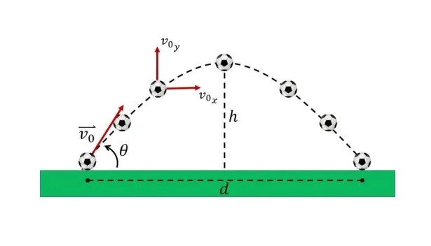
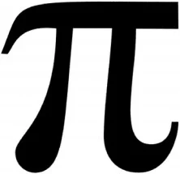
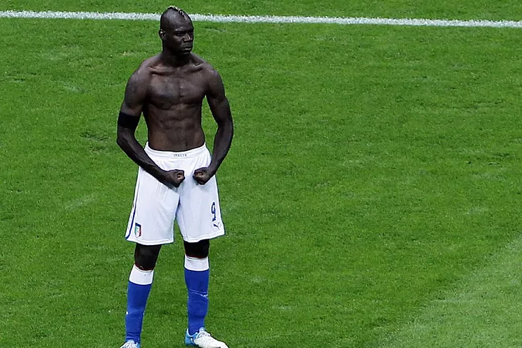

Preguntas
Pregunta 1: ¿Cuál es la fórmula de la distancia horizontal (Alcance) en el tiro parabólico?

Figura 1. Tomada de: [https://fisymat.com/fisica/tiro-parabolico-o-tiro-oblicuo-ejercicios-resueltos-paso-a-paso/]
Pregunta 2: ¿Cuáles son los primeros 10 dígitos del número pi (π)?

Figura 2. Tomada de: [https://www.smartick.es/blog/otros-contenidos/curiosidades/el-numero-pi/]
Pregunta 3: ¿Cuál de las siguientes no pertenece a las 7 maravillas del mundo moderno?
 Figura 3. Tomada de: [https://www.serfadu.com/2022/07/07/las-siete-maravillas-del-mundo-moderno/]
Figura 3. Tomada de: [https://www.serfadu.com/2022/07/07/las-siete-maravillas-del-mundo-moderno/]
Pregunta 4: ¿Cuándo se creó en Colombia la Constitución de 1991?
Figura 4. Tomada de: [https://www.uniminutoradio.com.co/como-nacio-la-constitucion-politica-del-91/]
Pregunta 5: ¿Cuál es el nombre de este jugador de fútbol?

Figura 5. Tomada de: [https://www.marca.com/futbol/futbol-internacional/2023/09/08/64fae08a22601d99518b45b5.html]